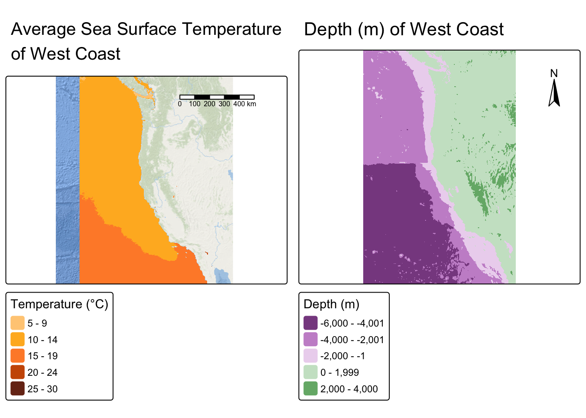
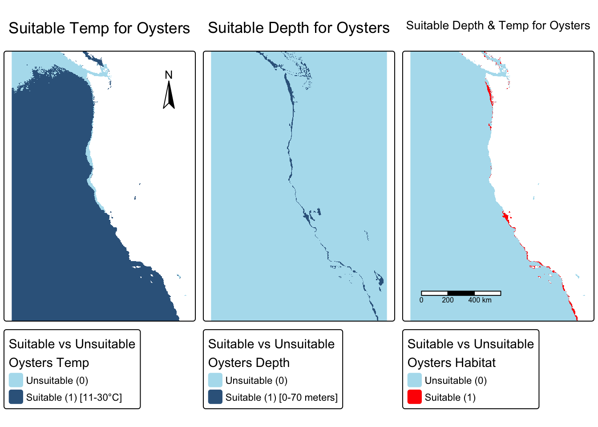
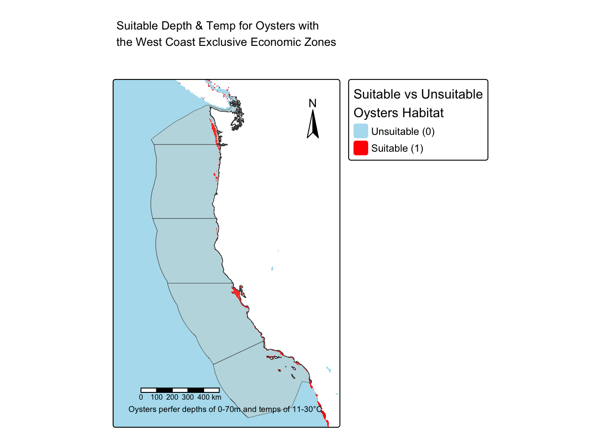
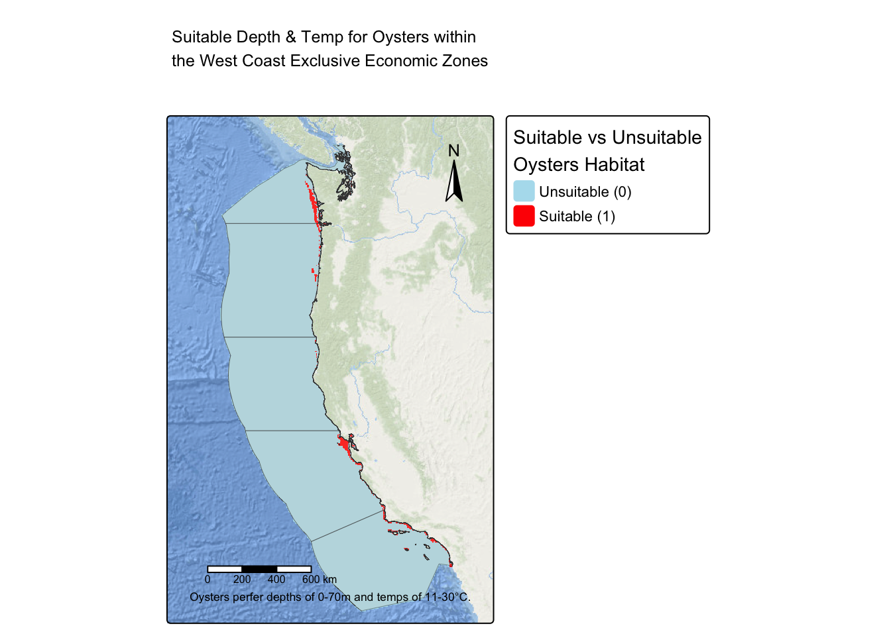
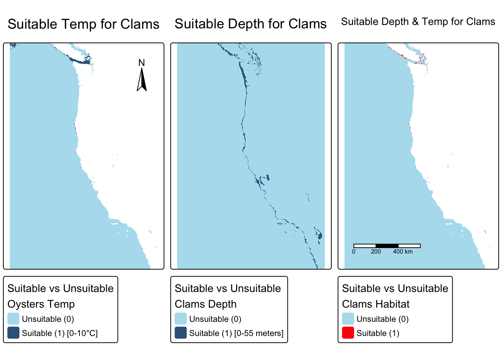
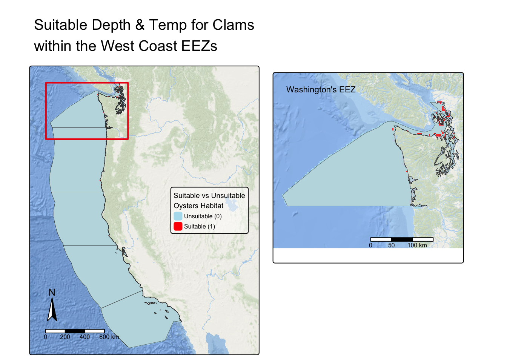

library(tidyverse)
library(terra)
library(stars)
library(sf)
library(tmap)
library(kableExtra)aquaculture_development
Homework 4:
Prioritizing potential aquaculture
Loading Libraries
Downloading data
# Sea Surface Temperature
rast_2008 <- rast(here::here('data', 'average_annual_sst_2008.tif'))
rast_2009 <- rast(here::here('data', 'average_annual_sst_2009.tif'))
rast_2010 <- rast(here::here('data', 'average_annual_sst_2010.tif'))
rast_2011 <- rast(here::here('data', 'average_annual_sst_2011.tif'))
rast_2012 <- rast(here::here('data', 'average_annual_sst_2012.tif'))
# Depth
bathy <- rast(here::here('data', 'depth.tif'))
# Exclusive Economic Zones
eez <- read_sf(here::here('data', 'wc_regions_clean.shp'))Coordinate Reference System
Check if the CRS match and update if not
# CRS UPDATING function
crs_update <- function (df1, df2) {
if (st_crs(df1) == st_crs(df2)) {
print("CRS match")
} else {
warning("Updating CRS")
df1 <- st_transform(df2, crs = "EPSG:4326")
df2 <- st_transform(df2, crs = "EPSG:4326")
}
}
# CRS CHECK function (with warning)
crs_check <- function (df1, df2) {
if (st_crs(df1) == st_crs(df2)) {
print("CRS match")
} else {
warning("CRS do NOT match")
}
}
# Check the dataframes
crs_update(bathy, eez)[1] "CRS match"crs_update(bathy, rast_2008)[1] "CRS match"crs_update(rast_2008, rast_2009)[1] "CRS match"crs_update(rast_2009, rast_2010)[1] "CRS match"crs_update(rast_2010, rast_2011)[1] "CRS match"crs_update(rast_2011, rast_2012)[1] "CRS match"Process data
Combine sst rasters
# Combine Sea Surface Temperature Rasters
sst_rast <- c(rast_2008, rast_2009, rast_2010, rast_2011, rast_2012)
# rast() would also work to merge
# Remove unbinded rasters
rm(list = c('rast_2008', 'rast_2009', 'rast_2010', 'rast_2011', 'rast_2012'))Find the mean SST - LOCAL algebra
# Find the mean SST
sst_mean <- mean(sst_rast)Convert SST from Kelvin to Celsius- GLOBAL algebra
# Subtract 273.15
sst_mean <- sst_mean - 273.15Crop depth raster to match the extent of the SST raster
# Extent of sst raster
sst_ext <- ext(sst_mean)
# Crop bathy to sst raster extent
bathy_crop <- crop(bathy, sst_ext)
rm(sst_ext)Fixing unmatching resolutions
# Resample bathy / depth data to match sst raster
bathy_updated <- resample(bathy_crop, sst_mean, method = "bilinear")
# Check resolutions
if (all(res(sst_rast) == res(bathy_updated))) {
print("Resolutions match")
} else {
warning("Resolutions don't match!")
}[1] "Resolutions match"# Remove uncropped and unresolutioned depth dfs
rm(list = c('bathy', 'bathy_crop'))Final Check depth and SST dfs match in resolution, extent, and coordinate reference system
# Do resolutions match?
all(res(bathy_updated) == res(sst_mean)) # Equal in both vs all directions[1] TRUE# Do extents match?
ext(bathy_updated) == ext(sst_mean) [1] TRUE# Do CRS match?
crs_check(bathy_updated, sst_mean)[1] "CRS match"Find suitable locations for Oysters
Oysters Research has shown that oysters need the following conditions for optimal growth:
- Sea surface temperature: 11-30°C
- Depth: 0-70 meters below sea level
Visualize Depth vs SST of West Coast
Code
# Map sst and bathy
bath_map <- tm_shape(bathy_updated) +
tm_raster(col.legend = tm_legend(title = "Depth (m)")) +
tm_title(text = "Depth (m) of West Coast") +
tm_compass(position = c('right', 'top'))
sst_map <- tm_shape(sst_mean) +
tm_raster(col.legend = tm_legend(title = "Temperature (°C)"),
col.scale = tm_scale(values = c('#ffcc84',"#FFB627", "#ff8c34", "#CC5803", "#772f1a"))) +
tm_title(text = "Average Sea Surface Temperature\nof West Coast") +
tm_scalebar(position = c('right', 'top')) +
tm_basemap("Esri.OceanBasemap")
tmap_arrange(sst_map, bath_map)[scale] tm_raster:() the data variable assigned to 'col' contains positive and negative values, so midpoint is set to 0. Set 'midpoint = NA' in 'fill.scale = tm_scale_intervals(<HERE>)' to use all visual values (e.g. colors)
Reclassifying locations that have optimal oyster temp or depth
- Unsuitable habitats = 0
- Suitable habitats = 1
Suitable DEPTH (0-70 meters below sea level) vs Unsuitable locations for oysters
# Create a reclassification matrix of values corresponding to unsuitable (1) vs suitable (2) depths for oysters
rcl_depth <- matrix(c(-Inf, -70, 0, # SUITABLE depth
-70, 0, 1, # SUITABLE depth
0, Inf, 0), # SUITABLE depth
ncol = 3, byrow = TRUE)
# Apply the reclassification matrix to the raster
depth_reclass <- classify(bathy_updated, rcl_depth) #other = NA)
# Delete matrix as object
rm(rcl_depth)Suitable TEMP (11-30°C) vs Unsuitable locations for oysters
# Create a reclassification matrix of values corresponding to unsuitable (1) vs suitable (2) temps for oysters
rcl_temp <- matrix(c(-Inf, 11, 0, # UNSUITABLE temp
11, 20, 1, #SUITABLE temp
20, Inf, 0), #UNSUITABLE temp
ncol = 3, byrow = TRUE)
# Apply the reclassification matrix to the raster
temp_reclass <- classify(sst_mean, rcl_temp) #other =NA)
# Delete matrix as object
rm(rcl_temp)Finding which areas have suitable depth AND temp for Oysters
# Check CRSs
crs_check(temp_reclass, depth_reclass)[1] "CRS match"# Create multiplication function
multiply <- function(layer1, layer2) {
layer1 * layer2
}
# Apply function to rasters
oyst_suit_raster <- lapp(c(temp_reclass,depth_reclass), fun = multiply)Visualizing depth and temp suitability for oysters
Code
# Plotting suitable habitats for Oysters
map_temp <- tm_shape(temp_reclass) +
tm_raster(
col.scale = tm_scale_categorical(
labels = c("Unsuitable (0)", "Suitable (1) [11-30°C]"),
values = c('lightblue2', 'steelblue4'),
),
col.legend = tm_legend(title = "Suitable vs Unsuitable\nOysters Temp"))+
tm_title(text = "Suitable Temp for Oysters") +
tm_compass(position = c('right', 'top'))
map_depth <- tm_shape(depth_reclass) +
tm_raster(
col.scale = tm_scale_categorical(
labels = c("Unsuitable (0)", "Suitable (1) [0-70 meters]"),
values = c('lightblue2', 'steelblue4'),
),
col.legend = tm_legend(title = "Suitable vs Unsuitable\nOysters Depth")
) +
tm_title(text = "Suitable Depth for Oysters")
map_oyst <- tm_shape(oyst_suit_raster) +
tm_raster(
col.scale = tm_scale_categorical(
labels = c("Unsuitable (0)", "Suitable (1)"),
values = c('lightblue2', 'red'),
),
col.legend = tm_legend(title = "Suitable vs Unsuitable\nOysters Habitat")) +
tm_title(text = "Suitable Depth & Temp for Oysters") +
tm_scalebar(position = c('left', 'bottom'))
tmap_arrange(map_temp, map_depth, map_oyst)
Code
# Remove maps as objects
rm(list = c('map_temp', 'map_depth', 'map_oyst'))Determining Most Suitable EEZ
Visualizing EEZs and suitable oysters habitat with EEZs
Code
# Vizualization of Habiatat and EEZs
tm_shape(oyst_suit_raster) +
tm_raster(
col.scale = tm_scale_categorical(
labels = c("Unsuitable (0)", "Suitable (1)"),
values = c('lightblue2', 'red'),
),
col.legend = tm_legend(title = "Suitable vs Unsuitable\nOysters Habitat")) +
tm_title(text = "Suitable Depth & Temp for Oysters with\nthe West Coast Exclusive Economic Zones") +
tm_shape(eez) +
tm_polygons(
lwd = 0.35,
fill = "peachpuff2",
fill_alpha = 0.2) +
tm_scalebar(position = c('left', 'bottom'),
margins = 1
) +
tm_compass(position = c('right', 'top')) +
tm_credits(text = "Oysters perfer depths of 0-70m and temps of 11-30°C.")
Selecting Suitable Habitats within all the West Coast EEZs
# Check is crs match
crs_check(oyst_suit_raster, eez)[1] "CRS match"# Mask suitable hab raster to the EEZ area
oyst_suit_crop <- mask(oyst_suit_raster, eez)Check if masked correctly by plotting
Code
# Check if it masked
tm_shape(oyst_suit_crop) +
tm_raster(
col.scale = tm_scale_categorical(
labels = c("Unsuitable (0)", "Suitable (1)"),
values = c('lightblue2', 'red'),
),
col.legend = tm_legend(title = "Suitable vs Unsuitable\nOysters Habitat")) +
tm_title(text = "Suitable Depth & Temp for Oysters within\nthe West Coast Exclusive Economic Zones") +
tm_shape(eez) +
tm_polygons(
lwd = 0.25,
fill = "peachpuff2",
fill_alpha = 0.2) +
tm_scalebar(position = c('left', 'bottom'),
margins = 1
) +
tm_compass(position = c('right', 'top')) +
tm_credits(text = "Oysters perfer depths of 0-70m and temps of 11-30°C.") +
tm_basemap("Esri.OceanBasemap")[plot mode] fit legend/component: Some legend items or map compoments do not
fit well, and are therefore rescaled.
ℹ Set the tmap option `component.autoscale = FALSE` to disable rescaling.
Find Area of Suitable habitat in West Coast EEZs
Total Area of West Coast EEZ
# Total area of all West Coast EEZ
print(paste("The total area of all West Coast EEZs is", round(sum(st_area(eez))/1e9,2), "x 10^9 m^2"))[1] "The total area of all West Coast EEZs is 820.22 x 10^9 m^2"Total Oyster suitable habitat in West Coast EEZ
# Creating raster of JUST the suitable habitats [1]
oyst_1 <- oyst_suit_crop
oyst_1[oyst_1 == 0] <- NA # unsuitable hab are 'NAs'
# Find total area of suitable habitats
area <- expanse(oyst_1)[1,2]
# Expense computes the area covered by raster cells that are not NA
print(paste("The area of all suitable oyster habitats in the West Coast EEZs is", round(area/1e9, 2), "x 10^9 m^2"))[1] "The area of all suitable oyster habitats in the West Coast EEZs is 10.6 x 10^9 m^2"Create a generalized function to find the area of suitable habitat for a species per each West Coast EEZ
# Find area of suitable habitat in each EEZ
suit_area_eez_generalized <- function (key, eez_zone_df, species_raster) {
# Make sure the crs match - warning if they do not match
if (st_crs(eez_zone_df) == st_crs(species_raster)) {
print("CRS match")
} else {
warning("CRS do NOT match!")
}
area_eez <- eez_zone_df %>% filter(rgn == key) # Filter per EEZ
spec_suit <- mask(species_raster, area_eez) # Masking the cropped-habitat-raster with each EEZ location
area <- expanse(spec_suit)[1,2] # Find area of the cropped hab rast
area_format <- paste(round(area / 1e8, 2), "x 10^8") # Make area easier to comprehend
#print(paste(key, "has an area of", area, "of oyster suitable habitat"))
#print(paste(round(area/10^9, 2), "x 10^9"))
df <- data.frame(key,area = area_format) # Make a dateframe out of results
return(df)
}Apply the function to Oyster data
# List of all eez keys
eez_keys <- c('Washington', 'Oregon', 'Northern California', 'Central California', 'Southern California')
# Apply the function to all keys and Oyster dataframe and make a combined dataframe from it
df_suit_area_eez <- do.call(
rbind, # Combine outputs into 1 data frame
lapply( # Apply all Oyster data to the function
eez_keys,
suit_area_eez_generalized,
eez_zone_df = eez,
species_raster = oyst_1
)
)[1] "CRS match"[1] "CRS match"[1] "CRS match"[1] "CRS match"[1] "CRS match"# Create a Table
kable(df_suit_area_eez, align = 'c', col.names = c("EEZ location", "Oyster Suitable Habitat Area"))| EEZ location | Oyster Suitable Habitat Area |
|---|---|
| Washington | 25.39 x 10^8 |
| Oregon | 11.48 x 10^8 |
| Northern California | 1.94 x 10^8 |
| Central California | 36.74 x 10^8 |
| Southern California | 32.42 x 10^8 |
Oysters have a large amount of suitable habitats in Washington, Central CA, and Southern CA. Central and South California’s temperature, ranging from 12°C to 20°C, is fully within the limits of oysters preferences. Additionally, oysters have a depth span of 0-70 meters below sea level, meaning oysters will reside closer to the coastline. The Washington and South California’s Exclusive Economic Zones offer a larger continental shelf where oysters can thrive. In conclusion, when mixing oysters depth and temperature preferences, Washington, Central CA, and Southern CA offer the most suitable habitats.
Suitable locations for Siliqua-patula
The Pacific razor clam location ranges from the Aleutian Islands in Alaska to Pismo Beach, California. The clam is typically discovered in depths between 0-55m, and its preferred temperature is around 5°C (estimating 0°C - 10°C).
Therefore, Pacific razor clam research has shown that the clams need the following conditions for optimal growth:
Sea surface temperature: 0-10°C
Depth: 0-55 meters below sea level
https://www.sealifebase.ca/summary/Siliqua-patula.html
Reclassifying locations that have optimal clam temp or depth
Creating a suitable habitat matrix for the Pacific razor clam
# Depth matrix
rcl_depth_clam <- matrix(c(-Inf, -55, 0, # UNSUITABLE
-55, 0, 1, # SUITABLE HABITAT
0, Inf, 0), # UNSUITABL
ncol = 3, byrow = TRUE)
# Temp matrix
rcl_temp_clam <- matrix(c(-Inf, 0, 0, # UNSUITABLE
0, 10, 1, # SUITABLE HABITAT
10, Inf, 0), # UNSUITABL
ncol = 3, byrow = TRUE)
# Apply the reclassification matrix to the depth and temp rasters
depth_reclass_clam <- classify(bathy_updated, rcl_depth_clam)
temp_reclass_clam <- classify(sst_mean, rcl_temp_clam)
# Remove matrixs as objects
rm(list = c('rcl_depth_clam', 'rcl_temp_clam'))Finding which areas have suitable depth AND temp for Clams
Multiplying rasters together - Suitable habitat for Pacific razor clam
# Check is crs match
crs_check(depth_reclass_clam, temp_reclass_clam)[1] "CRS match"# Multiple temp and depth rasters
oyst_suit_raster <- lapp(c(depth_reclass_clam, temp_reclass_clam), fun = multiply)Determining Most Suitable EEZ
Masking the Suitable habitat for Pacific razor clam raster to the West Coast EEZ
clam_suit_crop <- mask(oyst_suit_raster, eez)Visualize everything
Code
# Plotting suitable habitats for Oysters
# TEMP
map_temp_clam <- tm_shape(temp_reclass_clam) +
tm_raster(
col.scale = tm_scale_categorical(
labels = c("Unsuitable (0)", "Suitable (1) [0-10°C]"),
values = c('lightblue2', 'steelblue4'),
),
col.legend = tm_legend(title = "Suitable vs Unsuitable\nOysters Temp"))+
tm_title(text = "Suitable Temp for Clams") +
tm_compass(position = c('right', 'top'))
# DEPTH
map_depth_clam <- tm_shape(depth_reclass_clam) +
tm_raster(
col.scale = tm_scale_categorical(
labels = c("Unsuitable (0)", "Suitable (1) [0-55 meters]"),
values = c('lightblue2', 'steelblue4'),
),
col.legend = tm_legend(title = "Suitable vs Unsuitable\nClams Depth")
) +
tm_title(text = "Suitable Depth for Clams")
# TEMP AND DEPTH
map_clam <- tm_shape(oyst_suit_raster) +
tm_raster(
col.scale = tm_scale_categorical(
labels = c("Unsuitable (0)", "Suitable (1)"),
values = c('lightblue2', 'red'),
),
col.legend = tm_legend(title = "Suitable vs Unsuitable\nClams Habitat")) +
tm_title(text = "Suitable Depth & Temp for Clams") +
tm_scalebar(position = c('left', 'bottom'))
map_clam_crop <- tm_shape(clam_suit_crop) +
tm_raster(
col.scale = tm_scale_categorical(
labels = c("Unsuitable (0)", "Suitable (1)"),
values = c('lightblue2', 'red'),
),
col.legend = tm_legend(title = "Suitable vs Unsuitable\nOysters Habitat")) +
tm_title(text = "Suitable Depth & Temp for Clams within the West Coast EEZs") +
tm_shape(eez) +
tm_polygons(lwd = 0.35,
fill = "peachpuff2",
fill_alpha = 0.2) +
tm_basemap("CartoDB.PositronNoLabels")
tmap_arrange(map_temp_clam, map_depth_clam, map_clam)Warning: labels do not have the same length as levels, so they are repeated
Warning: labels do not have the same length as levels, so they are repeated[plot mode] fit legend/component: Some legend items or map compoments do not
fit well, and are therefore rescaled.
ℹ Set the tmap option `component.autoscale = FALSE` to disable rescaling.
[plot mode] fit legend/component: Some legend items or map compoments do not
fit well, and are therefore rescaled.
ℹ Set the tmap option `component.autoscale = FALSE` to disable rescaling.
[plot mode] fit legend/component: Some legend items or map compoments do not
fit well, and are therefore rescaled.
ℹ Set the tmap option `component.autoscale = FALSE` to disable rescaling.
Code
# TEMP AND DEPTH AND EEZ
# bbox of Washington EEZ
washington <- eez %>% filter(rgn_key == 'WA')
clam_suit_washington <- mask(clam_suit_crop, washington)
# Inset map of Just clams in Washington
washington_inset <- tm_shape(
clam_suit_washington,
bbox = sf::st_bbox(c(
xmin = -129.5, xmax = -122,
ymin = 45.5, ymax = 49
)),
crs = st_crs(clam_suit_washington) ) +
tm_raster(
col.scale = tm_scale_categorical(
values = c('lightblue2', 'red')),
col.legend = tm_legend_hide()) +
tm_shape(washington) +
tm_polygons(lwd = 0.35,
fill = "peachpuff2",
fill_alpha = 0.2) +
tm_title(text = "Washington's EEZ",
position = tm_pos_in(),
size = 0.7) +
tm_basemap("Esri.OceanBasemap") +
tm_scalebar(position = c('right', 'bottom'))
# TEMP AND DEPTH AND EEZ MAP
tm_shape(
clam_suit_crop,
bbox = sf::st_bbox(c(
xmin = -131, xmax = -110,
ymin = 30, ymax = 50
)),
crs = st_crs(clam_suit_crop)) +
tm_raster(
col.scale = tm_scale_categorical(
labels = c("Unsuitable (0)", "Suitable (1)"),
values = c('lightblue2', 'red'),
),
col.legend = tm_legend(title = "Suitable vs Unsuitable\nOysters Habitat",
position = tm_pos_in('right', 'center'),
title.size = 0.6,
text.size = 0.5,
bg.alpha = 0.5)
) +
tm_title(text = "Suitable Depth & Temp for Clams\nwithin the West Coast EEZs") +
tm_shape(eez) +
tm_polygons(lwd = 0.35,
fill = "peachpuff2",
fill_alpha = 0.2) +
tm_basemap("Esri.OceanBasemap") +
tm_compass(position = c('left', 'bottom'))+
tm_scalebar(position = c('left', 'bottom')) +
tm_inset(washington_inset,
position = tm_pos_out(),
width = 15,
height = 15)Warning: Current projection unknown. Long lat coordinates (wgs84) assumed.
Warning: Current projection unknown. Long lat coordinates (wgs84) assumed.
Code
# Remove objects
rm(list = c('map_temp_clam', 'map_depth_clam', 'map_clam'))Total Area of Clam suitable habitat in all West Coast EEZs
clam_1 <- clam_suit_crop
clam_1[clam_1 == 0] <- NA # unsuitable hab are 'NAs'
# Find total area of suitable habitats
area <- expanse(clam_1)[1,2]
# Expense computes the area covered by raster cells that are not NA
print(paste("The area of all suitable Pacific razor clam habitats in the West Coast EEZs is", round(area/1e8, 2), "x 10^8 m^2"))[1] "The area of all suitable Pacific razor clam habitats in the West Coast EEZs is 9.01 x 10^8 m^2"Which EEZ has the most clam suitable habitat
# Apply the function to all keys and Oyster dataframe and make a combined dataframe from it
df_suit_area_eez <- do.call(
rbind, # Combine outputs into 1 data frame
lapply( # Apply all Oyster data to the function
eez_keys,
suit_area_eez_generalized,
eez_zone_df = eez,
species_raster = clam_1
)
)[1] "CRS match"
[1] "CRS match"
[1] "CRS match"
[1] "CRS match"
[1] "CRS match"# Create a Table
kable(df_suit_area_eez, align = 'c', col.names = c("EEZ location", "Pacific Razor Clam Suitable Habitat Area in West Coast EEZs"))| EEZ location | Pacific Razor Clam Suitable Habitat Area in West Coast EEZs |
|---|---|
| Washington | 7.57 x 10^8 |
| Oregon | 1.27 x 10^8 |
| Northern California | 0.17 x 10^8 |
| Central California | 0 x 10^8 |
| Southern California | 0 x 10^8 |
The Pacific razor clams are mostly found on the continental shelf with depths from 0 to 55 meters. Furthermore, the clams need a temperature of around 5°C which limits them to the northern parts of the West Coast. Hence, Washington has the largest area of suitable habitat for the Pacific Razor Clams.